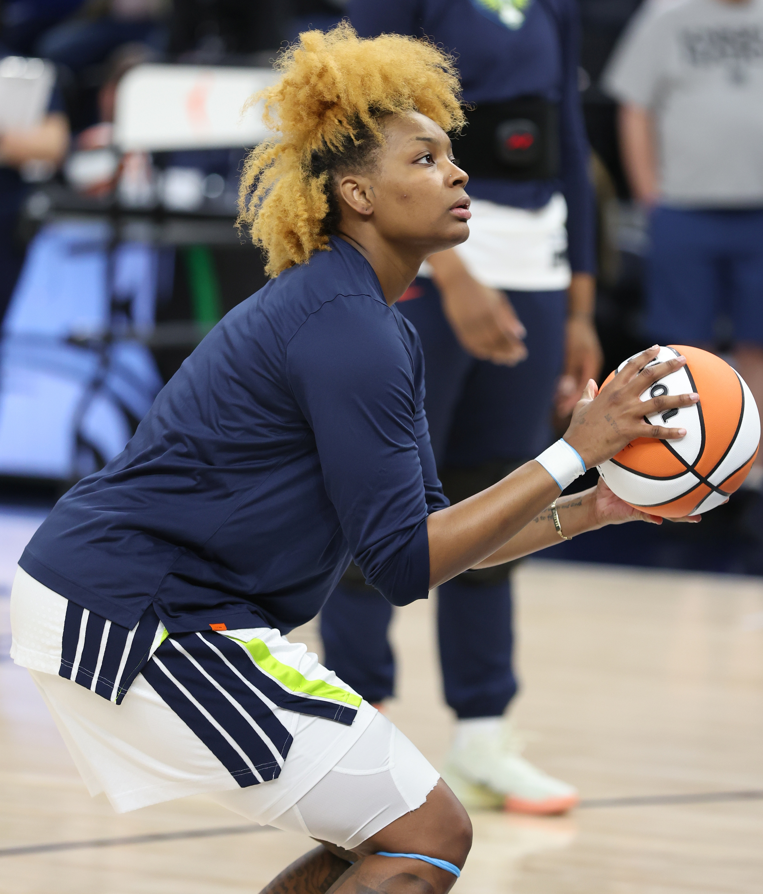
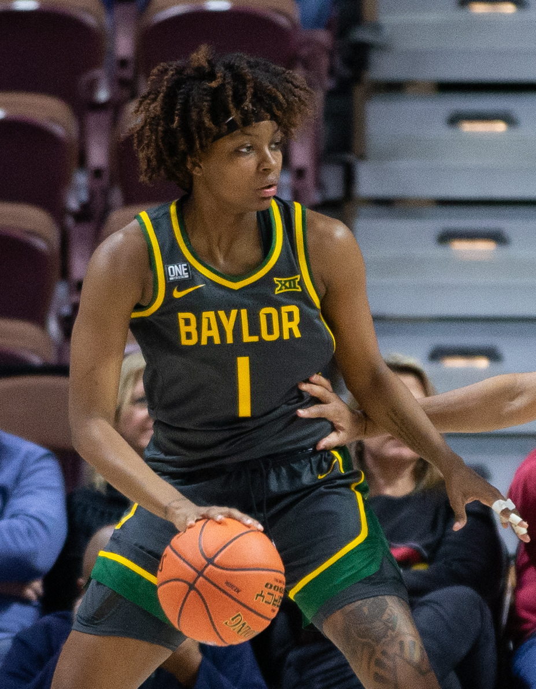
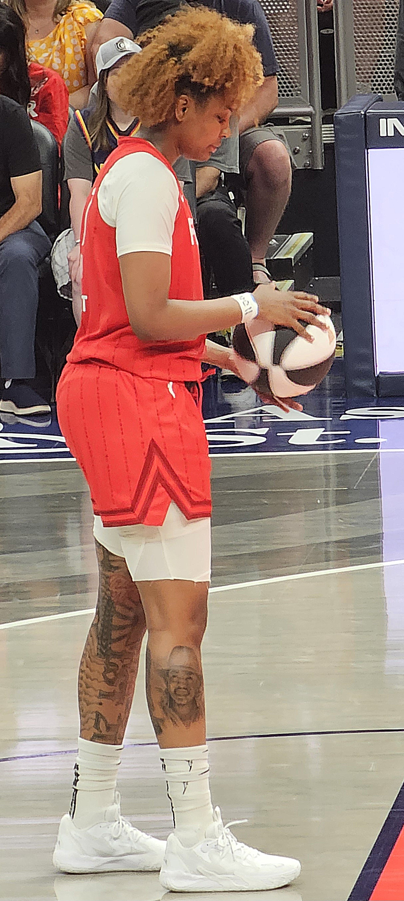

Community first
Listening closely, responding with care, and standing beside the people who need support.
Enter the discussion passcode to view three possible website directions.
Real change begins when we show up for one another—with purpose, with heart, and with hope for what comes next.

“To grow the community and help change lives one day at a time.”
Listening closely, responding with care, and standing beside the people who need support.
Opening doors and helping more people move forward with confidence and possibility.
Turning generosity into meaningful change that reaches beyond a single moment.

NaLyssa Smith is a professional basketball player and 2025 WNBA champion committed to using her voice, experience, and reach to help others thrive.
Through Athletes Unlimited, NaLyssa selected the Lupus Foundation of America as her cause after learning that her grandfather had been diagnosed with lupus. She spoke about wanting to learn more, get involved, and help spread awareness.
Read the Athletes Unlimited feature ↗Every gift helps move the mission forward and creates more possibilities for the communities we serve.
When purpose meets action, one day can become the start of something bigger.

GROW THE COMMUNITY. CHANGE LIVES. ONE DAY AT A TIME.
Start with the voices, experiences, and needs of the community.
Bring people and resources together to create meaningful support.
Keep showing up so today’s momentum becomes tomorrow’s progress.
NaLyssa supported the Lupus Foundation of America through Athletes Unlimited after learning of her grandfather’s diagnosis. She described learning, talking about lupus, and connecting affected people as important first steps.
See the verified story ↗Your generosity helps turn a shared belief in community into action that changes lives.
The NaLyssa Smith Foundation is grounded in a simple belief: meaningful change happens one day, one choice, and one act of care at a time.
We believe support should be thoughtful, community-centered, and grounded in the needs of the people it is meant to serve.
NaLyssa chose the Lupus Foundation of America as her Athletes Unlimited cause after her grandfather’s lupus diagnosis. Her comments centered on learning more, becoming involved, and raising awareness so people affected by lupus can connect.
View the source story ↗“Grow the community and help change lives one day at a time.”
Your support helps carry the mission forward—one day, one life, and one community at a time.